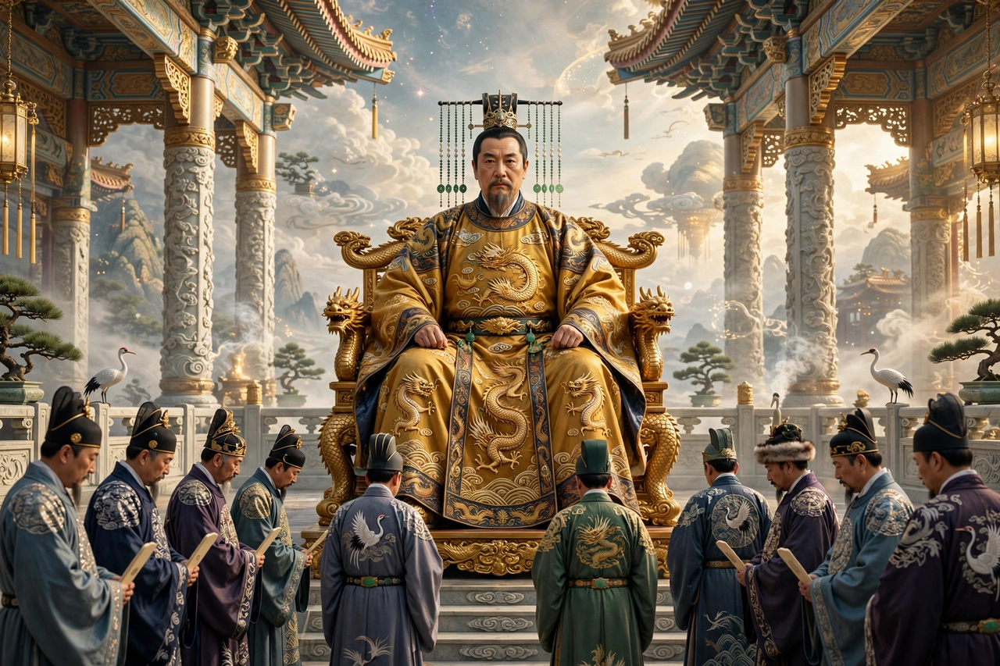

From Wikipedia, the free encyclopedia
| Jade Emperor | |
|---|---|
| Affiliation | Chinese folk religion and Taoism; ruler of heaven |
| Chinese | 玉皇大帝 (Yù Huáng Dàdì) |
| Abode | The heavenly court, modelled on the imperial bureaucracy |
| Festival | His birthday, the 9th day of the 1st lunar month |
| Role | Supreme administrator of the cosmos; assigner of ranks to gods and spirits |

The Jade Emperor (Chinese: 玉皇大帝) is the supreme ruler of heaven in Chinese folk religion and religious Taoism — the celestial counterpart of the earthly emperor, who governs the universe through a vast heavenly bureaucracy of ministries, magistrates and messengers, assigns every god and spirit its rank, and hears the annual reports on human households delivered by the Kitchen God. To the popular mind he is the grandfatherly apex of the cosmic order; hymns celebrate his birthday on the ninth day of the first lunar month with some of the year's grandest temple festivals, notably among Hokkien communities, where the "Pai Ti Kong" celebration fills the night with offerings of sugarcane and gold paper.
The Jade Emperor crystallised as a distinct high god in the Song dynasty, when emperors patronised his cult (one took his title into his own temple name) and Taoist scripture supplied him a biography: his cultivation through thousands of kalpas before attaining the throne of heaven. He is distinct from the abstract Heaven (Tian) of classical Confucian thought and from the primordial deities of high Taoism (the Three Pure Ones, above whom he does not rank in Taoist orthodoxy) — his supremacy is that of popular religion, where the universe is imagined, quite naturally, as an empire, and someone must sit on its throne. Benevolent, remote, and endlessly petitioned, he delegates: city gods, earth gods and stove gods govern the everyday world in his name.
The great novel Journey to the West made him immortal and faintly comic: it is the Jade Emperor who must cope with Sun Wukong's rebellion — offering the monkey a stable-boy's post, then the empty title "Great Sage Equal to Heaven", then war, and finally sending for the Buddha to subdue him — and his court's mixture of majesty and bureaucratic fluster is the novel's picture of power itself. New Year customs still enact his administration: the Kitchen God ascends to report, and heaven's verdict on the household's year is anxiously, festively awaited.
Taoism · Sun Wukong · Chinese philosophy · Confucianism · Buddhism